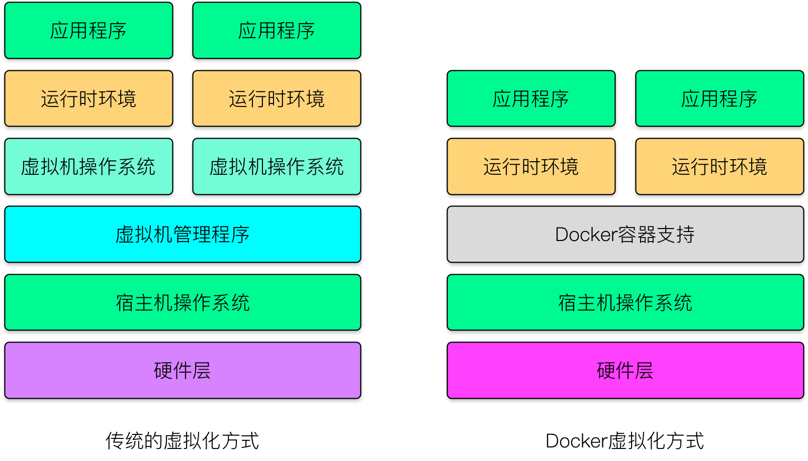

目录
什么是Docker
Docker开源项目
Docker是基于Go语言实现的云开源项目，诞生于2013年初，最初的发起者是dotCloud公司。dotCloud公司后来改名为Docker Inc，专注于Docker相关技术和产品的开发。
Docker的主要目标是“Build, Ship and Run Any App, Anywhere”，即通过对应用组件的封装（Packaging）、分发（Distribution）、部署（Deployment）、运行（Runtime）等设备能生命周期的管理，达到应用组件级别的“一次封装，到处运行”。这里的应用组件，既可以是一个web应用，也可以是一套数据库服务，甚至是一个操作系统或编译器。
Docker基于Linux的多项开源技术提供了高效、敏捷和轻量级的容器方案，并且支持在多种主流云平台（PaaS）和本地系统上部署。可以说Docker为应用的开发和部署提供了“一站式”的解决方案。
Linux容器技术
Docker 引擎的基础是Linux容器（Linux Containers，LXC）技术。
LXC被集成到了主流Linux内核中，进而成为Linux系统轻量级容器技术的事实标准。
从Linux容器到Docker
在LXC的基础上，Docker进一步优化了容器的使用体验。Docker提供了各种容器管理工具（如分发、版本、移植等）让用户无需关注底层的操作，可以简单明了地管理和使用容器。用户操作Docker容器就像操作一个轻量级的虚拟机那样简单。
可以简单地将Docker容器理解为一种沙盒（SandBox），每个容器内运行一个应用，不同的容器相互隔离，容器之间也可以建立通信机制。容器的创建和停止都十分快速，容器自身对资源的需求也十分有限，远低于虚拟机。
为什么要使用Docker
Docker容器虚拟化的好处
高效地构建应用。Docker通过容器打包应用，节约时间，降低部署过程出现问题的风险。
Docker在开发和运维中的优势
- 更快速的交付和部署。使用Docker，开发人员可以使用镜像来快速构建一套标准的开发环境；开发完成后，测试和运维人员可以直接使用相同环境来部署代码。Docker可以快速创建和删除容器，实现快速迭代，大量节约开发、测试、部署的时间。并且，各个步骤都有明确的配置和操作，整个过程全程可见，使团队更容易理解应用的创建和工作过程。
- 更高效的资源利用。Docker容器的运行不需要额外的虚拟化管理程序（Virtual Machine Manager，VMM，以及Hypervisor）支持，它是内核级的虚拟化，可以实现更高的性能，同时对资源的额外要求很低。
- 更轻松的迁移和扩展。Docker容器几乎可以在任意平台上运行，包括物理机、虚拟机、公有云、私有云、个人电脑、服务器等。这种兼容性让用户可以在不同平台之间轻松地迁移应用。
- 更简单的更新管理。使用Dockerfile，只需要小小的配置修改，就可以代替以往大量的更新工作。并且所有的修改都以增量的方式进行分发和更新，从而实现自动化并且高效的容器管理。
Docker与虚拟机比较
Docker在运行应用上相比传统虚拟机方式具有显著的优势：
- Docker容器很快，启动和停止可以在秒级实现。
- Docker容器对系统资源需求很少，一台主机可以同时运行数千个Docker容器。
- Docker通过类似Git的操作来方便用户获取、分发和更新应用镜像，指令简明，学习成本低。
- Docker通过Dockerfile配置文件来支持灵活的自动化创建和部署机制，提高工作效率。
| 特性 | 容器 | 虚拟机 |
|---|---|---|
| 启动速度 | 秒级 | 分钟级 |
| 硬盘使用 | 一般为MB | 一般为GB |
| 性能 | 接近原生 | 弱于 |
| 系统支持量 | 单机支持上千个容器 | 一般几十个 |
| 隔离性 | 安全隔离 | 完全隔离 |
虚拟化与Docker
虚拟化技术，在计算机领域，一般指的是计算机虚拟化（Computing Virtualization），或通常说的服务器虚拟化。
从大类上分，虚拟化技术可以分为基于硬件的虚拟化和基于软件的虚拟化。其中，真正意义上的基于硬件的虚拟化技术不多见，少数如网卡中的单根多IO虚拟化（Single Root I/O Virtualization and Sharing Specificatio，SR-IOV）等技术。
基于软件的虚拟化从对象所在的层次，又可以分为应用虚拟化和平台虚拟化（通常说的虚拟化技术即属于这个范畴）。其中，前者一般指的一些模拟设备或Wine这样的软件。后者又可以详细分为：
Virtualization* 完全虚拟化。虚拟机模拟完整的底层硬件环境和特权指令的执行过程，客户机操作系统无需进行修改。例如VMware Workstation、VirtualBox、QEMU等。
- 硬件辅助虚拟化。利用硬件（主要是CPU）辅助支持（目前x86体系结构上可用的硬件辅助虚拟化技术包括Intel-VT和AMD-V）处理敏感指令来实现完全虚拟化的功能，客户机操作系统无需修改，例如VMware WorkStation、Xen、KVM。
- 部分虚拟化。只针对部分硬件资源进行虚拟化，客户端操作系统需要进行修改。现在有些虚拟化技术的早期版本仅支持部分虚拟化。
- 超虚拟化（paravirtualization）。部分硬件接口以软件的形式提供给客户机操作系统，客户机操作系统需要进行修改，例如早期的Xen。
- 操作系统级虚拟化。内核通过创建多个虚拟的操作系统（内核和库）来隔离不同的进程。容器相关技术即在这个范畴。
Docker和常见的虚拟机方式的不同之处。
传统方式是在硬件层面实现虚拟化，需要有额外的虚拟机管理应用和虚拟机操作系统层。
Docker容器是在操作系统层面上实现虚拟化，直接复用本地主机的操作系统，因而更加轻量级。

Docker和传统的虚拟机方式的不同之处